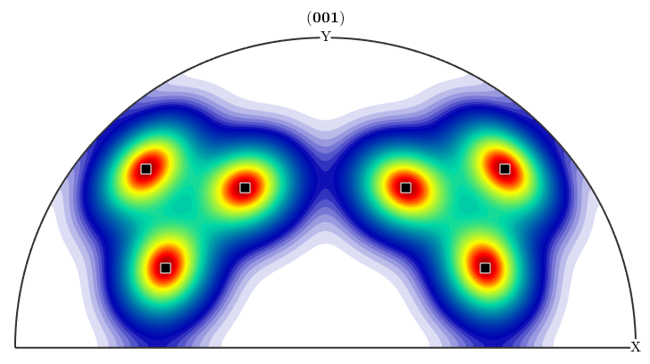

(method of ODF)
heuristic to find modal orientations
[modes, volume] = calcComponents(odf)
| odf | |||||
| param,val | Parameters and values that control calcComponents
|
| modes |
modal orientation |
| volume |
volume of the component |
%find the local maxima of the [[SantaFe.html,SantaFe]] ODF
mode = calcModes(SantaFe)
plotPDF(SantaFe,Miller(0,0,1,mode.CS))
annotate(mode)
mode = orientation
size: 1 x 1
crystal symmetry : m-3m
specimen symmetry: 222
Bunge Euler angles in degree
phi1 Phi phi2 Inv.
296.565 48.1897 26.5651 0
 | DocHelp 0.1 beta |